비서-2급 (2019-11-10 기출문제)
1과목: 비서실무
1. 아래는 대학에서 비서를 전공하고 이번에 졸업과 동시에 금영자동차 사장의 비서가 된 최빛나와 친구의 대화내용 중 일부이다. 다음 중 비서의 자질과 태도가 반영된 대화로 가장 적절하지 않은 것은?
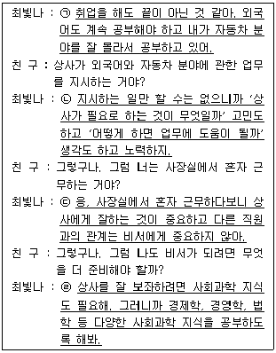
- ㉠
- ㉡
- ㉢
- ㉣
(정답률: 77%)

2. 김비서는 신입비서를 교육하는 업무를 담당하게 되었다. 업무중심 교육도 실시할 예정이나 신입비서의 경력개발을 독려하는 차원에서 자기계발에 관한 내용도 포함하려 한다. 김비서가 강의 안에 포함시키기에 가장 부적절한 것은?
- 우선 전임자가 작성해놓은 서류들을 읽어보고, 맡겨진 업무와 관련된 서적도 읽으시기 바랍니다.
- 우리 회사의 여러 동아리 활동에 적극 참여하여 비서 업무에 관해 의견도 나누고 회원 간 교류도 하시기 바랍니다.
- 매일 회사 관련 뉴스를 읽으시기 바랍니다.
- 업무 매뉴얼을 숙지하는 것이 무엇보다 우선입니다.
(정답률: 56%)
3. 다음은 이도건설 대표이사의 부재중 이비서의 통화내용이다. 아래의 내용 중 이비서의 전화응대로 가장 적절한 것은?
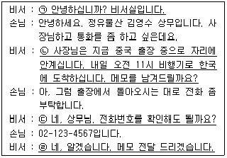
- ㉠
- ㉡
- ㉢
- ㉣
(정답률: 42%)
4. 다음 상황에서 비서의 전화 연결응대 자세로 가장 바람직한 것은?
- 상사가 통화 중일 경우, 상대방에게 통화 중임을 정중하게 전달한 후 기다려달라고 한다.
- 비서가 자리를 몇 시간 정도 비우게 될 때 업무 대리자에게 전화 수신을 부탁해 둔다.
- 상사보다 직위가 높은 사람에게 전화할 때는 상대방 비서가 없다면 반드시 상사가 직접 전화를 걸도록 한다.
- 통화 도중에 급한 다른 전화가 오면, 먼저 걸려온 전화는 통화 중 대기를 해놓고 급한 전화부터 처리한다.
(정답률: 48%)
5. 우리 회사를 처음 방문하게 된 ABC회사의 전영식 상무(남성)와 김미리 과장(여성)을 우리회사 강영훈 본부장(남성)에게 소개할 때 올바른 소개 순서는?
- “강 본부장님, 이분은 ABC 회사에서 오신 김미리 과장이시고 그 옆은 전영식 상무님이십니다.”
- “김과장님, 이 분은 우리 회사의 강영훈 본부장님이십니다.”
- “강 본부장님, 이 분은 김미리 과장님이시고 이 분은 전영식 상무님이십니다.”
- “상무님, 이 분은 저희 회사의 강영훈 본부장님이십니다.”
(정답률: 35%)
6. 다음 중 비서가 상사와의 원만한 관계를 위해 취한 행동으로 가장 적절한 것은?
- 비서는 상사에게 비서의 업무처리방법, 성격, 업무역량, 취미 등을 미리 알려 주어 상사가 업무 지시 때 참고할 수 있도록 한다.
- 비서는 상사에게 단점이 있다면 비공식 자리에서 상사에게 조심스럽게 알려 드린다.
- 비서는 상사에게 바른 정보를 제공할 수 있도록 다양한 채널을 유지한다.
- 비서는 회사 구성원들에게 상사의 단점이나 상사가 싫어하는 부분을 알려주어 결재 시 참고할 수 있도록 조정 역할을 한다.
(정답률: 68%)
7. 사장비서인 이빛나에게 김이사는 이번 주 금요일 저녁 5시 사장의 일정을 문의하였다. 다음 주 화요일에 있을 A회사 광고 입찰을 위한 발표의 사전 시연 및 사장의 승인 건이라고 하였다. 그러나 사장은 금요일 5시 30분에 가족만찬이 있어 회사에서 5시에 떠날 예정이다. 이때 이비서의 행동으로 가장 적절한 것은?
- 김이사에게 상사는 금요일 그 시간에 가족만찬이 예정되어 있어 일정이 불가하다고 답하였다.
- 김이사에게 상사는 선약이 있어 아마 그 시간은 어려울 것 같지만, 상사에게 확인 후 연락하겠다고 하였다.
- 가족만찬보다는 발표가 더 중요하므로 김이사에게는 일정이 가능하다고 답한 후 추후 상사에게 보고하였다.
- 금요일에는 상사가 선약이 있으므로 김이사에게 다음 주 월요일 오후에 상사에게 보고할 것을 제안하였다.
(정답률: 68%)
8. 다음 중 한자가 바르게 연결된 것은?
- 영업(營業) - 무역(貿易) - 노사(勞使)
- 영업(繁榮) - 무역(物價) - 노사(勞動)
- 영업(運營) - 무역(貿易) - 노사(勞動)
- 영업(産業) - 무역(物價) - 노사(勞使)
(정답률: 38%)
9. 경영진 일정관리에 대한 설명으로 적절하지 않은 것은?
- 요즘 PC와 스마트폰에 연동되는 전자일정표를 활용하는 상사와 비서의 증가로 언제 어디서나 일정을 확인하고 수정하기가 수월해졌다.
- 정기적인 행사와 비정기적인 행사를 구분하여 계획을 세우고 체계화한다.
- 어떤 경우라도 일정은 변동될 수 없다는 사실을 기억하고 일정을 빈틈없이 관리하여야 하며, 상사에게는 항상 최종 일정을 알려 드려야 한다.
- 일정관리를 위해 다이어리를 이용하는 비서가 많은데 다이어리는 보통 1년 기준으로 되어 있으며 사용 후 버리지 말고 일정 기간 보관하여 참고 자료로 활용 가능하다.
(정답률: 70%)
10. 예약업무의 효율성을 높이기 위한 비서의 행동으로 가장 적절하지 않은 것은?
- 상사가 자주 이용하는 식당은 미리 목록별로 정리해 놓고 수시 업데이트하여 업무에 활용한다.
- 상사가 자주 이용하는 골프장은 위약 규정을 사전에 확인하여 불필요한 비용이 발생하거나 상사가 피해를 입지 않도록 한다.
- 상사의 일정은 일정표에 기입해 이중 예약을 방지하며, 상사의 일정이므로 관련자나 운전기사가 그 내용을 알지 못하도록 유의한다.
- 예약을 완료한 후에는 그 이력을 정리하여 데이터베이스로 구축해 놓고 상사가 선호하는 방식이 무엇인지 참고하여 활용한다.
(정답률: 72%)
11. 해외출장 준비에 대한 설명으로 적절하지 않은 것은?
- 여권의 유효 기간이 남아 있더라도 유효 기간이 6개월 이상 남아있는지 평소에 상사의 여권을 관리한다.
- 우리나라와 비자 면제 협정인 나라를 방문할 때에는 단기 입국의 경우 비자가 필요 없으나 상사의 출장이 결정되면 비자의 필요 여부를 사전에 확인해 보아야 한다.
- 중국으로 출장 계획 중인 상사의 중국 비자는 상사가 직접 중국대사관에 방문해서 받아야 한다.
- 분실을 대비하여 여권 정보, 신용카드 번호, 항공권 번호, 여행자수표 일련번호 등을 정리하여 비서가 보관한다.
(정답률: 66%)
12. 다음 중 회의통지와 관련된 비서의 업무로 가장 부적절한 것은?
- 회의 일시를 정하기에 앞서 주요 회의 참석자들의 일정을 확인하였다.
- 회의 참석자들의 참석 여부를 사전에 파악하기 위하여 RSVP 항목을 회의통지서에 포함시켰다.
- 회의통지서는 지난 회의의 파일을 수정하여 작성하고 이틀 전에 회의 참석자들에게 발송하였다.
- 회의통지서는 회의 명칭, 안건, 회의 일시, 장소, 진행 순서 및 프로그램, 주최자 연락처 등을 개조식으로 정리하였다.
(정답률: 64%)
13. 상석의 일반적인 원칙에 대한 설명으로 가장 부적절한 것은?
- 접견실에서의 상석은 출입문에서 먼 안쪽 좌석이다.
- 상사의 좌석이 정해져 있는 경우 상사의 오른편이 왼편보다 상석이다.
- 기사가 운전하는 자동차를 타고 상사와 함께 이동할 경우 상사는 뒤편 오른쪽에, 비서는 상사의 옆 좌석에 앉는다.
- 기차에서의 상석은 기차 진행 방향의 창가 좌석이다.
(정답률: 55%)
14. 비서의 보고 요령에 대한 설명으로 가장 부적절한 것은?
- 보고하기 전 육하원칙에 따라 정리하고 미리 자신에게 질문을 해봄으로써 상사의 질문을 예상해본다.
- 객관적인 사실에 기반한 보고를 하기 위하여 보고서에 숫자가 포함된 표를 모두 수집하여 나열한다.
- 상사가 결정하는데 도움이 되도록 전문가의 의견도 조사하여 보고한다.
- 상사가 주로 사용하는 용어를 사용하여 보고한다.
(정답률: 55%)
15. 다음 중 비서의 화법으로 가장 적절한 것은?
- 상사의 지시 내용을 전달하며 “과장님, 사장님께서 말씀 전하라고 하셨습니다.”라고 하였다.
- 상사의 지시대로 회의를 준비한 후, “사장님, 회의 준비되셨습니다.” 라고 보고하였다.
- 상사가 직접 작성하여야 하는 서류를 드리며 “작성 중에 궁금한 점이 계시면 저를 불러주세요.”라고 하였다.
- 상사가 외출할 시간이 다가오자 “사장님, 김기사님이 현관에 대기 중이십니다.”라고 하였다.
(정답률: 52%)
16. 상사의 인적사항을 정리한 파일을 관리하는 방법으로 가장 부적절한 것은?
- 파일은 암호화하고 별도의 폴더를 만들어 보관하여 보안관리에 힘썼다.
- 상사의 이력서를 제출해야 할 경우 원파일을 제공하여 상대방이 충분한 정보를 확인할 수 있도록 하였다.
- 상사가 꽃가루 알레르기가 있다는 것을 알게 되어 사무실 환경 조성에 유의하였다.
- 상사의 인적 네트워크를 관리하기 위해 명함, 동창 주소록 등과 인물정보 사이트의 자료를 수집해 데이터베이스를 구축하였다.
(정답률: 57%)
17. 다음 중 조문예절에 대한 설명으로 가장 부적절한 것은?
- 조문 시 복장은 가급적 정장을 하며 화려한 색깔이나 요란한 무늬의 옷은 피한다.
- 조문 절차는 조객록에 서명 후 호상에게 자기 신분을 설명하고 조문하는 순서로 한다.
- 분향 후 불을 끌 때는 입으로 불어서 조용히 끄도록 한다.
- 영정에 대한 분향 재배를 마치면 한 걸음 물러나와 상제와 맞절을 하고, 조문 인사를 한다.
(정답률: 63%)
18. 다음 중 일반적인 테이블 매너로 가장 적절한 것은?
- 만찬의 메인메뉴가 스테이크로 결정되어 와인은 화이트와인으로 준비하였다.
- 식사 도중 포크가 바닥에 떨어졌을 때 직접 줍지 않고 웨이터를 불러 새 것을 달라고 하였다.
- 식사 도중 잠시 자리를 뜰 때는 냅킨을 접어 테이블에 올려 놓았다.
- 나이프와 포크는 안쪽에 있는 것부터 순서대로 사용하였다.
(정답률: 56%)
19. 김영철 사장은 현재 외부에서 회의 참석 중이며 일정상으로는 2시간 후에 끝난다. 다음은 상공물산 대표가 비서실로 전화를 걸어 이야기 한 내용이다.
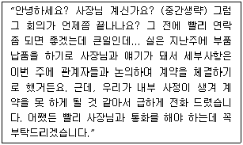
이 상황에서 비서의 가장 적절한 보고 방법은?
- 상사가 지금 외부 회의 중이므로 담당 부서장에게 일단 이 사실을 보고 드린 후, 부서장 지시에 따라 움직인다.
- 2시간 후면 회의가 끝날 예정이라 상사 휴대전화에 상황을 문자로 보내 놓고, 2시간 후에 전화로 이 내용을 보고 드린다.
- 현재 회의 중이라 할지라도 긴급상황이라 판단되어 휴대전화로 바로 전화를 드리고 안 받는 경우를 대비해서 문자를 남겨 둔다.
- 휴대전화로 바로 전화를 드리면서 동시에 회의 주최 측 담당자와 통화하여 급한 상황이라 지금 통화하고 싶다는 메모를 사장에게 즉시 전달해 달라고 부탁한다.
(정답률: 42%)
20. 내방객 배웅 시 유의해야 할 점으로 가장 적절하지 않은 것은?
- 손님이 돌아갈 때는 비서는 하던 업무를 멈추고 배웅한다.
- 손님을 배웅할 때는 손님이 보이지 않을 때까지 다른 행동으로 옮기지 않는다.
- 운전기사가 있는 경우 주차장이나 운전기사에게 연락해 승용차를 현관에 대기하도록 한다.
- 손님을 배웅할 때는 엘리베이터 앞에서 배웅한다.
(정답률: 64%)
2과목: 경영일반
21. 다음 중 기업이 윤리경영을 위해 설치하는 조직의 제도적 행위로써 알맞지 않은 것은?
- 내부거래 활성화
- 윤리위원회 조직
- 기업윤리규범 및 직업윤리강령 제정
- 윤리핫라인 및 민원자문관 운영
(정답률: 52%)
22. 다음은 A회사에 새로 입사한 김비서가 회사의 경영현황을 파악하기 위해 노력한 활동이다. 이 중 가장 거리가 먼 활동은 무엇인가?
- 조직의 연혁을 파악한다.
- 주요 임원의 얼굴, 이름, 지위를 파악한다.
- 지사, 공장 소재지 현황, 책임자 등을 파악한다.
- 인사에 관련된 회사 내규를 살펴보고 불공정하다고 고려되는 부분을 파악하여 상사에게 바로 보고한다.
(정답률: 68%)
23. 과업환경은 기업활동에 직접적인 영향을 미친다. 다음은 이러한 과업환경의 변화파악을 위한 관련 이해관계자를 나열한 것으로, 4가지 보기 중 이해관계자의 성격이 다른 하나는?
- 협력기업 - 경쟁기업
- 주주 - 노동조합
- 정부 - 금융기관
- 지역사회 - 소비자
(정답률: 35%)
24. 다음 중 중소기업의 특징에 관한 설명으로 가장 적절하지 않은 것은?
- 중소기업의 범위는 중소기업기본법에서 정하고 있다.
- 중소기업은 시장범위의 한계성을 갖고 있으며 시장점유율이 상대적으로 낮다.
- 중소기업은 생산 측면에서 규모의 경제를 이루게 되어 대기업에 비해 가격경쟁에서 유리할 수 있다.
- 중소기업은 경영규모가 작기 때문에 간접비용이 적게 들고 경기변동에 신축적으로 대응할 수 있다.
(정답률: 52%)
25. 다음은 주식회사에 대한 설명이다. 그 설명으로 가장 맞지 않는 것은?
- 주식회사제도를 채택하는 이유는 다수의 출자자로부터 대규모의 자본을 쉽게 조달할 수 있기 때문이다.
- 회사의 경영은 대표이사가 담당하며, 대표이사의 업무집행을 감사하는 것은 이사회가 담당한다.
- 주식회사를 설립하기 위해서는 발기인에 의한 정관 작성, 주주 모집, 창립총회 개최, 설립등기 등의 절차가 필요하다.
- 주식회사는 상법에 의해 설립되는 법인으로 회사이름으로 부동산을 소유, 판매할 수 있으며, 소유권이 넘어가더라도 계속 기업으로 존속할 수 있다.
(정답률: 37%)
26. 자기 회사의 산하에 있는 자회사의 주식을 전부 또는 지배 가능한 한도까지 매수하여 기업 합병에 의하지 않고 다른 회사를 지배하는 회사를 무엇이라 하는가?
- 콩글로머리트(conglomerate)
- 카르텔(cartel)
- 신탁회사(trust company)
- 지주회사(holding company)
(정답률: 49%)
27. 다음 중 기업의 형태에 대한 설명으로 가장 적절하지 않은 것은?
- 합자회사는 무한책임사원과 유한책임사원으로 구성되어, 무한책임사원이 경영에 참여하는 기업 형태이다.
- 주식회사는 출자자의 지분을 증권화하여 주주의 유한책임 제의 특징을 갖고 있다.
- 유한회사의 최고 의사결정기관은 사원총회이다.
- 주식회사의 최고 의사결정기구는 이사회로 사내이사와 사외이사로 구성할 수 있다.
(정답률: 28%)
28. 다음 중 경영관리활동의 순환과정을 가장 적절히 나열한 것은?
- 계획수립활동 → 통제활동 → 조직화활동 → 지휘활동
- 조직화활동 → 계획수립활동 → 지휘활동 → 통제활동
- 조직화활동 → 조정활동 → 통제활동 → 지휘활동
- 계획수립활동 → 조직화활동 → 지휘활동 → 통제활동
(정답률: 55%)
29. 다음 중 민츠버그(Mintzberg)가 구분한 경영자 역할 중 의사결정자로서의 역할내용으로 가장 적절한 것은?
- 대변인으로서의 역할
- 자원배분자로서의 역할
- 정보전달자로서의 역할
- 대외관계 관리자로서의 역할
(정답률: 26%)
30. 다음 중 명령일원화의 원칙이 지켜지지 않는 조직구조는 무엇인가?
- 사업부제 조직
- 프로젝트 조직
- 라인-스탭 조직
- 매트릭스 조직
(정답률: 42%)
31. 다음은 리더십의 최신이론 중 변혁적 리더십의 특징을 설명한 것이다. 이 중 가장 적절하지 않은 것은?
- 부하들에게 수행에 대한 즉각적이고 가시적인 보상으로 동기부여함
- 변환적이고 새로운 시도에 도전하도록 부하를 격려함
- 질문을 하여 부하들이 스스로 해결책을 찾도록 격려하거나 함께 일함
- 부하들과 비전공유, 학습경험의 자극을 통해 성과이상을 달성하도록 함
(정답률: 46%)
32. 다음 중 동기부여 이론에 대한 설명으로 가장 적절하지 않은 것은?
- 허즈버그(Herzberg)의 2요인 이론은 직무충실화에 대한 이론적 근거를 제시해 주었다.
- 매슬로우(Maslow)의 욕구단계론은 인간의 욕구가 만족-진행과 좌절-퇴행의 과정을 거치면서 동시에 둘 이상의 욕구를 추구한다고 본다.
- 브룸(Vroom)의 기대 이론에서 기대감(expectancy)은 자신의 능력으로 바람직한 성과를 낼 것인가의 기대를 의미한다.
- 애담스(Adams)의 공정성 이론은 한 개인이 타인에 비해 얼마나 공정하게 대우를 받느냐 하는 사회적 비교를 중시한다.
(정답률: 40%)
33. 급변하는 환경속의 기업 경영자는 여러 가지 의사결정을 위해 정보를 다양하게 활용하고 있다. 다음 중 의사결정에 사용되는 바람직한 정보의 특성과 가장 거리가 먼 것은?
- 정보는 오류의 가능성을 가지고 있기에 정보가 정확할수록 의사결정의 방향과 내용이 올바르게 결정될 가능성이 크다.
- 시기를 놓치면 가치가 줄어드는 정보가 있기에 정보는 적시에 제공되어야 한다.
- 정보는 증명가능하지 않기에 증명되지 않더라도 의사결정에 사용하는 것이 좋다.
- 정보는 특수성을 지니고 있기에 일반적인 것 보다 특수한 상황에 적합한 것이어야 한다.
(정답률: 53%)
34. 다음 보기에서 설명하고 있는 경영정보시스템은 무엇인가?
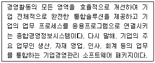
- BPR(비즈니스 리엔지니어링)
- DSS(의사결정 지원 시스템)
- ERP(전사적 자원관리 시스템)
- IRS(정보 보고 시스템)
(정답률: 57%)
35. 마케팅 믹스는 마케팅 목표를 달성하기 위해 사용하는 핵심도구이다. 품질, 특징, 디자인, 포장, 서비스, 품질보증 등과 관련된 내용은 마케팅 믹스 요인 중 어디에 해당하는 것인가?
- 제품결정(Product)
- 가격결정(Price)
- 유통결정(Place)
- 촉진결정(Promotion)
(정답률: 41%)
36. 기업의 인적자원관리는 매우 중요한 프로세스이다. 다음 중 인사평가 결과를 활용하는 분야로 가장 거리가 먼 것은?
- 직무수행에 맞는 적합한 인재를 배치하고 승진 배치에 활용한다.
- 공정한 보상의 원칙에 따라 보상을 책정한다.
- 교육 및 훈련개발에 활용한다.
- 비즈니스 모델 개발에 활용한다.
(정답률: 52%)
37. 다음 중 ⓐ, ⓑ, ⓒ에 들어갈 용어로 바르게 연결된 것은?
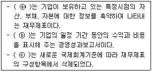
- ⓐ 재무상태표 - ⓑ 포괄손익계산서 - ⓒ 이익잉여금처분계산서
- ⓐ 자본변동표 - ⓑ 포괄손익계산서 - ⓒ 현금흐름표
- ⓐ 재무상태표 - ⓑ 포괄손익계산서 - ⓒ 자본변동표
- ⓐ 자본변동표 - ⓑ 재무상태표 - ⓒ 현금흐름표
(정답률: 48%)
38. 정부나 중앙은행, 금융회사의 개입 없이 온라인상에서 개인과 개인이 직접 돈을 주고받을 수 있도록 암호화된 가상화폐(암호화폐)는 무엇인가?
- 블록체인
- 가상토큰
- 비트코인
- 디지털코인
(정답률: 54%)
39. 다음 중 물가가 계속 하락하는 디플레이션이 지속될 때 나타나는 경제현상으로 가장 적절하지 않은 것은?
- 화폐가치 하락
- 부채에 대한 부담 증가
- 기업 투자 위축
- 소비 감소
(정답률: 26%)
40. 다음의 A에 공통으로 들어가는 용어로 가장 옳은 것은?
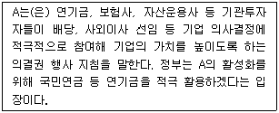
- 세이프가드(safeguard)
- 스튜어드십 코드(stewardship code)
- 섀도보팅(shadow voting)
- 신디케이트(syndicate)
(정답률: 33%)
3과목: 사무영어
41. Choose one that does NOT match each other.
- NRN : No reply necessary
- GDP : Gross Domestic Product
- MA : Marvel of Arts
- N/A : Not applicable
(정답률: 41%)
42. Choose one which is the MOST appropriate department name for the blank.
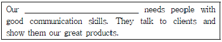
- Research and Development Department
- Sales Department
- Planning Department
- Human Resources Department
(정답률: 46%)
43. Which is a grammatically CORRECT sentence?
- My flight was delaying three hours.
- He will come back within February 10th.
- I am sorry to keep you waiting.
- She asked to me showing you below the meeting room.
(정답률: 31%)
44. Which English sentence is grammatically LEAST correct?
- How long will you be staying?
- I'll see if he is available now.
- Please make yourself at comfortable.
- May I have your telephone number in Seoul?
(정답률: 34%)
45. In the Resume, which is NOT properly categorized?
- Personal Data - Full Name
- Employment record - Company Name
- Special Skills - Computer competence
- Education - Job title
(정답률: 43%)
46. Which is CORRECT about below memo?
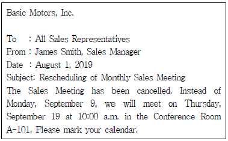
- This is to change the meeting date into August 1.
- The sender of this is a sales representative.
- This is to inform the change of the meeting place.
- The receiver of this belongs to the Basic Motors company.
(정답률: 29%)
47. 다음 우리말을 영어로 옮길 때 괄호 안에 가장 적합한 것을 고르시오.
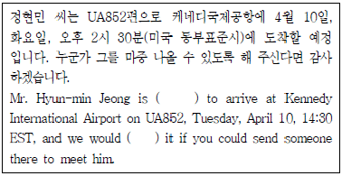
- coming - inform
- due - appreciate
- plan - reserve
- owing - grate
(정답률: 40%)
48. Which is a LEAST proper English expression?
- 인터넷에서 뷰어를 내려 받으십시오. Download a viewer from the Internet.
- 첨부된 신청서를 작성해 주시기 바랍니다. Please fill out the attached application.
- 아래는 요청하신 정보입니다. The information you've reserved is as follows.
- 죄송하지만 그 주는 제가 일이 있습니다. I am sorry but I'll be occupied that week.
(정답률: 39%)
49. What kind of letter is this?
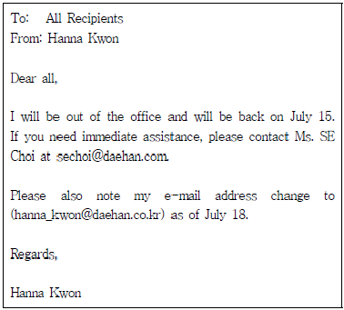
- Announcement Letter
- Congratulation Letter
- Appointment Letter
- Inquiry Letter
(정답률: 42%)
50. What is NOT related to the term for the minutes?
- Call a meeting
- Adjournment
- Make a motion
- Bibliography
(정답률: 36%)
51. Which of the following is LEAST appropriate?
- 어제 영업 회의를 다음과 같이 정리하였습니다. The following is a summary of yesterday's sales meeting.
- 다음 주에 있을 연례 평가 회의에 대해 상기시켜 드리고자 합니다. I want to remind you of our annual evaluation meeting next week.
- 회의 요약 내용을 첨부하였습니다. An agenda of the meeting is forwarding.
- 저희 월요일 정기 회의가 화요일로 옮겨집니다. Our regular Monday meeting will be moved to Tuesday.
(정답률: 42%)
52. Which of the following is NOT a proper pair?
- 주간 요금이 얼마입니까? What is the weekly rate?
- 일주일에 200달러이고 하루 추가될 때마다 40달러입니다. It's $200 per week, with $240 for each additional day.
- 어느 범위까지 적용해 줍니까? What kind of coverage do you offer?
- 하루에 10달러씩 내시면 충돌 피해에 대한 요금 부과가 없습니다. For $10 a day, there will be no charge for collision damage.
(정답률: 41%)
53. Which of the followings are MOST appropriate expressions for the blank ⓐ and ⓑ?
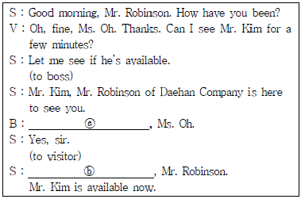
- ⓐ Show him within, ⓑ Please have a seat over there
- ⓐ Send her at, ⓑ Would you come this way?
- ⓐ Send him in, ⓑ Please go right in
- ⓐ Take it inside, ⓑ This way
(정답률: 38%)
54. Which is LEAST correct about Mr. Kim's itinerary?
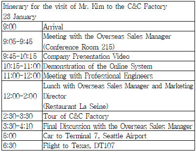
- At 9:30 a.m., Mr. Kim is supposed to be in Conference Room 215.
- Mr. Kim is going to have lunch with Professional Engineers.
- At 12:30 p.m., Mr. Kim will have lunch in restaurant La Seine.
- At 7:00 p.m., Mr. Kim will be in flight.
(정답률: 46%)
55. What is the COMMON expression for the blank ⓐ and ⓑ?
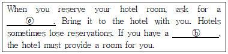
- Reservation Date
- Cancellation number
- Confirmation number
- Accommodation fee
(정답률: 38%)
56. Which of the following is the MOST appropriate expression for the blank?
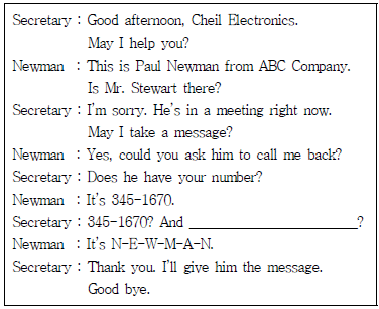
- How do I address you?
- Could you spell your last name, please?
- Can I spell your given name?
- How can I pronounce your surname?
(정답률: 46%)
57. Fill in the blank with the MOST suitable one.
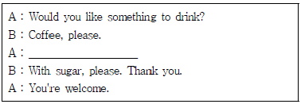
- What do you like it?
- How would you like it?
- How do you want it like?
- What would you like to do?
(정답률: 31%)
58. Which of the following is the LEAST appropriate expression for the blank?
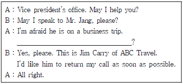
- Would you like to leave a message?
- May I take a message?
- Could you ask him to call me back?
- Can I give him a message for you?
(정답률: 30%)
59. Fill in the blank with the BEST sentence.
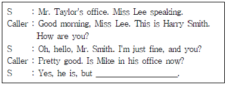
- he will be back in one hour.
- he has in busy line.
- I will tell him that you called.
- he is on another line now.
(정답률: 27%)
60. What are the BEST expressions for the blank ⓐ and ⓑ?
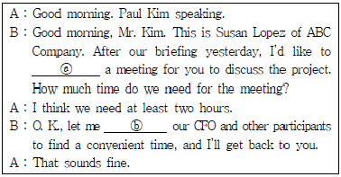
- ⓐ schedule ⓑ get in touch with
- ⓐ call off ⓑ show
- ⓐ arrange ⓑ transfer
- ⓐ put off ⓑ connect
(정답률: 31%)
4과목: 사무정보관리
61. 상공주식회사에서 이사회 개최 지원업무를 담당하고 있는 왕수현비서는 보안유지를 위하여 이사회 자료를 직접 제본하고 있다. 회의 참석하는 이사님들은 360도로 자료를 펼치거나 접기 쉬운 형태로 제본해 주기를 원하고 있다. 이러한 요구사항에 가장 적합한 형태의 제본은 무엇인가?
- 와이어 제본
- 열접착 제본
- 스트립 제본
- 무선 제본
(정답률: 45%)
62. 다음과 같이 클라우드 서비스를 이용하고 있다. 다음 중 가장 적절하지 않은 것은?
- 상사가 해외 출장시 확인하셔야 할 문서파일을 클라우드에 저장해두었다.
- 상사의 스마트폰에서 클라우드로 사진파일을 업로드하였다.
- 여러 기기에서 동기화가 가능해서 여러 곳에서 동일 파일을 사용하고 있다.
- 모든 클라우드 서비스에는 파일편집기능이 내장되어 있어 파일을 다운로드받지 않고 편집하였다.
(정답률: 49%)
63. 다음 중 컴퓨터 바이러스 예방을 위한 조치로서 가장 적절하지 않은 것은?
- 인터넷 브라우저의 팝업차단을 해제한다.
- 백신프로그램을 설치하고 주기적으로 업데이트한다.
- 공유폴더는 가급적 최소화 하되, 부득이 만들어야 할 때에는 암호화한다.
- 발신자가 불명확한 사람이 보낸 이메일은 열어보지 않는다.
(정답률: 56%)
64. 다음 중 블로그에 관한 설명이 가장 올바르지 않은 것은?
- 웹로그의 줄임말로서 일반인의 관심주제나 일상에 관해 자유롭게 글을 게재하는 온라인 다이어리라고 할 수 있다.
- 블로그에 사진과 동영상 등을 올려서 타인에게 자신의 생각을 전달할 수 있다.
- 다른 SNS에 비해 주제별 게시물 작성이 용이하여 체계적으로 정보를 전달한다.
- 파워 블로거란 마케팅 수단으로 블로그를 직접 운영하여 활용하는 기업을 뜻한다.
(정답률: 47%)
65. 프레젠테이션에서 모든 슬라이드에 동일한 글꼴과 이미지를 포함할 때 사용하는 것은?
- 슬라이드 디자인
- 슬라이드 스타일
- 슬라이드 마스터
- 슬라이드 디자인 아이디어
(정답률: 42%)
66. 다음은 스마트폰 앱 등을 매개로 수입을 올리는 플랫폼 경제 종사자의 수입에 관한 그래프이다. 해당 그래프를 통해서 알 수 있는 내용으로 가장 적절하지 않은 것은?
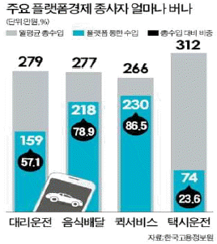
- 택시운전자의 월 평균 수입이 그래프에 언급된 다른 직종 종사자 중 가장 높다.
- 퀵서비스는 월 평균 수입액은 가장 적지만, 플랫폼으로 인한 수입액은 가장 많다.
- 음식배달은 스마트폰 앱을 통해서 경제활동을 하는 건수가 전체건수 대비 78.9%이다.
- 택시운전자가 플랫폼으로 인한 수입이 가장 적다.
(정답률: 49%)
67. 다음 기사를 읽고 기사내용과 가장 부합하지 않은 것을 고르시오.
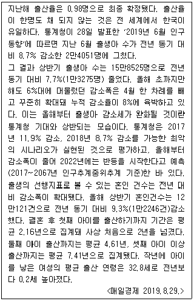
- 우리나라의 지난해 출산율이 전 세계에서 가장 낮다.
- 재작년의 여성 평균출산연령은 32.6세였다.
- 통계청은 올해부터는 신생아 출생 감소세가 줄어들 것이 라고 예측했었다.
- 결혼 후 첫아이 출산때까지의 기간이 2년이 넘은 것은 작년이 최초이다.
(정답률: 30%)
68. 다음 중 데이터베이스관리시스템의 특징으로 가장 적절하지 않은 것은?
- 데이터 중복의 최소화
- 구축 비용 절감
- 데이터의 무결성 유지
- 데이터 공유 가능
(정답률: 34%)
69. 다음 중 전자결재 시스템의 특징으로 가장 적절하지 않은 것은?
- 문서의 등록번호는 자동으로 지정된다.
- 문서 검토 중에 의견을 첨부할 수 있다.
- 결재 경로를 지정해두면 중간에 변경이 불가능하다.
- 결재 상황을 조회해볼 수 있다.
(정답률: 53%)
70. 다음 중 문서 정리 순서로서 올바른 것은?
- 분류 - 주제표시 - 주제결정 - 검사 - 정리
- 검사 - 주제결정 - 주제표시 - 분류 - 정리
- 주제결정 - 주제표시 - 검사 - 분류 - 정리
- 주제표시 - 주제결정 - 분류 - 정리 - 검사
(정답률: 27%)
71. 다음 중 광디스크에 해당하는 것은?
- 플래시메모리
- 블루레이
- SD카드
- SSD
(정답률: 37%)
72. 다음 중 우편발송 서비스를 가장 부적절하게 사용한 경우는?
- 매월 정기적으로 회사간행물을 우편으로 보내고 있어서 요금 후납 제도를 이용한다.
- 12월에 연하장 200부를 보내게 되어서 요금 별납 제도를 이용하였다.
- 3천만원 가량의 수표를 우편으로 보내야 되는 상황이라서 유가 증권 등기를 이용하였다.
- 내용증명으로 발송하기 위해서 동일한 본문을 3통 준비하여 우체국에 제출하였다.
(정답률: 36%)
73. 다음 중 전자금융 사기와 관련 용어에 대한 설명으로 틀린 것을 모두 고르시오.
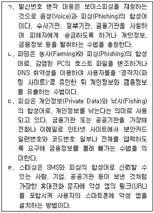
- ㄱ, ㄴ
- ㄴ, ㄷ
- ㄹ, ㄱ
- 해당 사항 없음
(정답률: 39%)
74. 전자 문서에 관한 설명으로 틀린 것은?
- 문서 작성용 소프트웨어를 사용하여 작성·저장된 파일을 포함하며, 전자적 이미지 및 영상 등의 디지털 콘텐츠도 전자 문서의 범주에 속한다.
- 전자 문서는 법적 효력이 인정되어 법적 분쟁 및 규제 대응이 가능하다.
- 전자 문서 국제 표준은 PDF로 지정되었다.
- 비서실에 있는 일반스캐너로 생성한 문서도 전자화문서로서 동일한 법적효력을 인정받는다.
(정답률: 53%)
75. 명함 관리에 관한 설명으로 가장 적절하지 않은 것은?
- 명함이 많지 않을 경우 이름을 기준으로 분류하면 편리하다.
- 많은 명함을 보관할 때는 명함첩을 사용하면 추가 시 편리하다.
- 명함 관리 DB를 이용하면 메일 머지 사용이나 라벨을 출력하기 편리하다.
- 직위나 소속 등이 변경되면 새 명함으로 교환해 정리하고 예전 명함은 폐기한다.
(정답률: 22%)
76. 문서 관리에 대한 설명으로 가장 올바른 것은?
- 새로운 자료 입수 시라도 이전의 자료를 폐기하지 않고 반드시 보관하여 문서 변천을 파악하여야 한다.
- 원본이 명확하게 정리되어 있더라도 복사본을 최대한 많이 확보하여 분실·소실의 위험에 대비한다.
- 보존 기간이 지나서 불필요하거나 정보의 가치가 없어진 문서라도 일정 기간 반드시 보관 및 보존을 유지한다.
- 넓은 의미로 문서의 작성부터 시작하여 처리, 유통, 분류, 보관, 이관, 보존, 대여, 열람, 폐기에 이르기까지 사무 능률을 향상시킬 수 있도록 하는 경영 활동으로 정의할 수 있다.
(정답률: 28%)
77. 다음은 의례문서작성 시 유의사항이다. 내용 중 잘못 기술된 것은?
- 교육이나 모임, 행사 등 참가 요청을 목적으로 하는 안내장 작성 시 참가비가 있는 경우일지라도 금액을 안내장에서 안내하는 것은 지양한다.
- 초대장은 특정인에게 꼭 참석해 주기를 바라는 성격이 강하므로 안내장보다 더욱 예의와 격식을 갖추어야 한다.
- 축하장은 상대방이 기뻐할 때 축하해 줄 수 있도록 신속하게 작성해서 보내는 것이 좋다.
- 감사장은 대부분 기업에 보내는 것이 아니라 개인에게 직접 감사하는 형식이므로 너무 형식에 치우지지 않도록 한다.
(정답률: 40%)
78. 문장부호별 주요 용법 관련 설명이 틀린 것은?
- 제목이나 표어가 문장 형식으로 되어 있더라도 마침표, 물음표, 느낌표 등을 쓰지 않는 것이 원칙이다.
- '2019년 10월 27일'은 마침표를 활용하여 '2019. 10. 27.'과 같이 나타낼 수 있다.
- 줄임표는 앞말에 붙여 쓰는 것이 원칙이지만, 문장이나 글의 일부를 생략함을 보일 때에는 줄임표의 앞뒤를 띄어 쓴다.
- 줄임표를 사용할 때에는 가운데 여섯 점뿐만 아니라 가운데 세 점을 찍는 것은 가능하지만, 아래 여섯 점, 아래 세 점을 찍는 것은 허용하지 않는다.
(정답률: 38%)
79. 다음 중 공문서 종류를 올바르게 설명한 것은?
- 지시문서 : 헌법, 법률, 대통령령, 총리령, 부령, 조례, 규칙 등에 관한 문서
- 공고문서 : 행정기관이 일정한 사항을 기록하여 행정 기관 내부에 비치하면서 업무에 활용하는 대장, 카드 등의 문서
- 일반문서 : 이 보기에서 제시한 3가지 문서에 속하지 아니하는 모든 문서
- 민원문서 : 민원인이 행정 기관에 허가, 인가, 그 밖의 처분 등 특정한 행위를 요구하는 문서와 그에 대한 처리문서
(정답률: 35%)
80. 다음 중 밑줄 친 부분의 맞춤법이 가장 적절하지 않은 것은?
- 시민으로써 당연한 행동입니다.
- 은퇴한 상무님이 이번에 아틀리에를 여셨어.
- 왠지 오늘 기분이 좋아.
- 이 조각품은 희한하게 생겼다.
(정답률: 40%)
최빛나: "정말요? 기쁘네요. 그런데 제가 비서로서 가져야 할 자질과 태도가 무엇인지 알고 싶어요."
㉠ "비서는 상사의 명령에 따라 일을 처리하는 것이 가장 중요해. 그리고 상사의 일정 관리와 문서 작성 능력도 필수적이야."
㉡ "비서는 상사와의 원활한 의사소통이 필요해. 그리고 비서로서의 자질은 성실함과 책임감, 그리고 빠른 대처 능력이 필요해."
㉢ "비서는 상사의 명령에 따라 일을 처리하는 것도 중요하지만, 상사와의 관계도 중요해. 비서는 상사와의 신뢰 관계를 유지하며, 상사의 일정 관리와 문서 작성 능력 또한 필수적이야."
㉣ "비서는 상사의 일정 관리와 문서 작성 능력이 가장 중요해. 그리고 상사와의 원활한 의사소통 능력도 필요하지만, 상사의 명령에 따라 일을 처리하는 것은 보조적인 역할이야."
정답: ㉠
해설: 이 대화에서는 비서로서 가져야 할 자질과 태도에 대해 이야기하고 있다. ㉠에서는 비서로서 필요한 역할과 능력에 대해 구체적으로 언급하고 있으며, 다른 보기들도 비서로서 필요한 역할과 능력에 대해 이야기하고 있다. 따라서, 가장 적절하지 않은 대화는 ㉢이다. ㉢에서는 비서로서 상사와의 관계와 신뢰 관계에 대해 강조하고 있지만, 이는 비서로서 필요한 역할과 능력 중 하나일 뿐이며, 다른 보기들과는 달리 구체적인 역할과 능력에 대해 이야기하지 않고 있다.